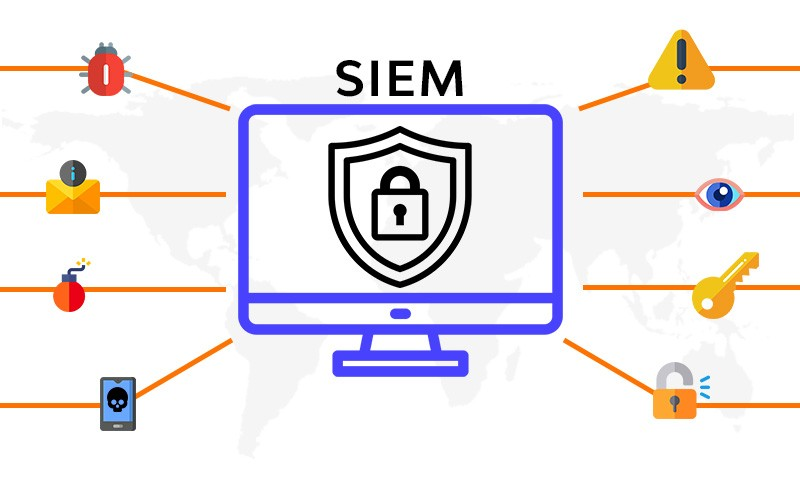

Bilingual (English–Spanish) Cloud Engineer with a strong focus on AWS, infrastructure automation, CI/CD pipelines and observability. Proven track record of building solutions that enhance audit readiness, reduce operational costs and improve system visibility. Excellent analytical, systems-thinking and problem-solving skills. Highly motivated and curious professional with a natural ability to learn and adapt quickly.
Cloud Engineer – Astropay (April 2023 - Present)
• Design and deploy cloud infrastructure using AWS.
• Develop and maintain terraform modules for infrastructure management.
• Build CI/CD pipelines and GitOps workflows.
• Design, build and maintain monitoring, logging, and alerting solutions to ensure system health and reliability.
• Troubleshoot and resolve infrastructure issues across all environments.
• Provide guidance on AWS IAM.
• Conduct POCs for AWS services and third-party tools, and implement solutions based on findings.
• Create and maintain technical documentation and operational runbooks.
Key achievements:
• Designed and implemented an authentication mechanism for EC2 instances and production databases using AWS-native features, ensuring compliance with audit requirements and strengthening access controls.
• Developed custom GitHub Actions pipelines and reusable workflows to migrate key CI/CD jobs from Jenkins.
• Implemented a company-wide SIEM system using the ELK stack, integrating AWS services, identity providers, security platforms and other third-party tools to enable centralized logging, end-to-end traceability and compliance with audit requirements.
• Developed custom Logstash pipelines and index mappings to optimize index and search performance.
• Customized Index Lifecycle Management (ILM) policies across all environments to improve log and metric retention, reducing storage costs and saving the company over $150,000 annually.
• Implemented monitoring and alerting solutions using custom Terraform modules for EC2 instances, EKS clusters and critical AWS API calls with ADOT, Amazon-managed Prometheus and Grafana, CloudTrail, CloudWatch and SNS.
Cloud Engineer – Accenture (January 2022 – April 2023)
• Managed Linux-based OS servers (RHEL and CentOS).
• Managed cloud-based services in AWS, Azure and GCP.
• Troubleshot FortiClient and Symantec issues.
• Ensured system stability and performance through monitoring and alert resolutions with Nagios and Cloudwatch.
• Managed Identity and Access Management (IAM) in AWS, GCP, and Azure.
Things I Can Do
- Break stuff, fix it, automate it (DevOps style)
- Build and manage cloud infrastructure
- Read docs, RFCs, and random blog posts for hours
- Fuel everything with strong coffee
- Keep things moving with an agile mindset
- Keep learning, share what I know, and help others grow
Cloud Projects
Some cloud projects I've worked on:

SIEM
Implemented a company-wide SIEM system using the ELK stack, integrating AWS services, identity providers, security platforms and other third-party tools to enable centralized logging, end-to-end traceability and compliance with audit requirements.
lorem
Implemented an end-to-end monitoring and alerting solutions using custom Terraform modules for EC2 instances, EKS clusters and critical AWS API calls with ADOT, Amazon-managed Prometheus and Grafana, CloudTrail, CloudWatch and SNS

Enhanced security
Designed and implemented an authentication mechanism for production databases using AWS-native features, ensuring compliance with audit requirements and strengthening access controls